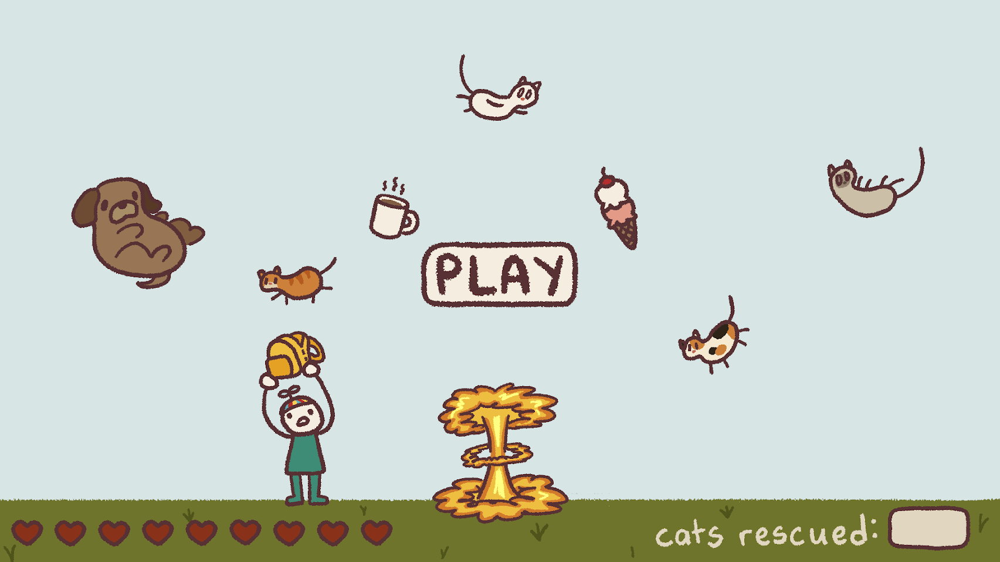

Games

This game, called Be Careful What You Wish For, is a simple game that a peer and I created over a span of two days for a Global Game Jam. Click the link below (or click the game art above) to try it out for yourself!
Play Now!!
Click me for a toybox theme!
Click me for a marshmallow theme!
(reload the page to reset to the default melon theme!)